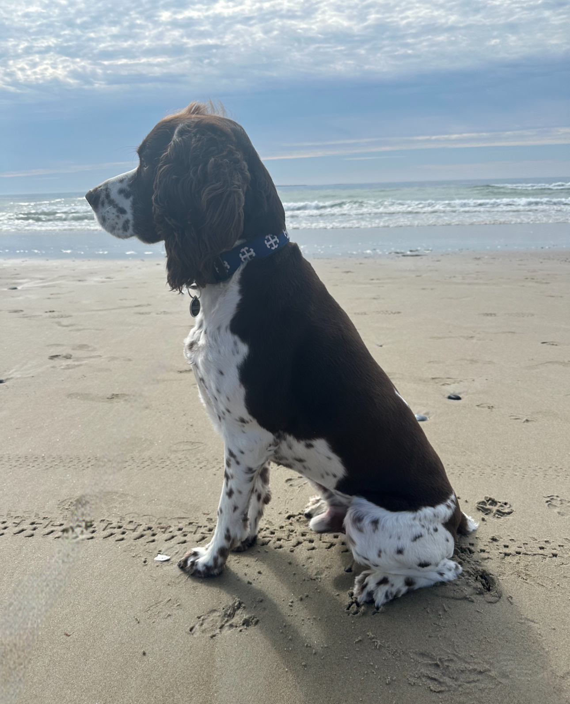

This is Winston! Winston is my sister Madi's dog and he is the only boy dog in the TN household. Even though he is the biggest dog in our house, he is still last in terms of their pecking order. Winston, or Winnie as we've come to call him, is very food motivated and will do basically anything in attempt to get a treat. He also loves to play with his toys, even though Cali will usually beat him to it. He can usually be found outside watching and chasing the birds or squirrels, or possibly barking at the mailman. Winston is the most expressive dog I've ever met. It's difficult to explain how, but he makes his state of mind known to all. Winnie will audibly sigh when he doesn't get what he wants (a treat, even though he just had one) or will groan when he wants to go to bed and others are still talking. He is just adorable and so very loved.
 Back to My Pets